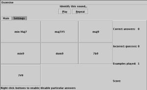

Check out my ear training program (Summer 2001). This program will help you quickly learn to recognize and identify common musical structures including intervals, scales/modes, and chords.

My java friends who don't want to mess around with Java Web Start can download smartears.jar and launch the application by typing:
java -jar SmartEars.jar
Unfortunately, for Windows 98, the Java Runtime Environment does not include any Sound Banks. SmartEars should still run, but you will not be able to change the timbre of the sound. If you would like to be able to select different sounds, see the instructions here, and then download either the minimal (0.35MB), midsize (1.09MB), or deluxe (4.92MB) soundbanks.
Using SmartEars should be (I hope!) largely self-explanatory and easy. Two quick tips:
- To turn off certain answers you are not intrested in (eg. unisons and octaves) right-click on their button (Command-click on OS X)
- To hear sounds played simultaneously (as a chord) instead of arpeggiated, click into the Settings Tab and set the Note Delay to 0
I am distributing the program using a technology called Java Web Start which will let you launch it from the web or from your computer, and will take care of keeping your version up to date automatically. If you have never run a Web Start program before, you will need to first install Java Web Start on your computer by visiting http://java.sun.com/products/javawebstart/.
Once you've got Java Web Start, you can download and launch the program by clicking the link above. Once you have dowloaded it once, Java Web Start will save the program on your computer, so the next time you launch it (either from this web page or through the Java Web Start application on your computer) it will start up right away. As I release updates, Java Web Start will automatically make sure you have the latest files.
If you've got the Java Runtime Environment 1.3 or newer and Java Web Start installed, you should be all set. Web start works on Windows 95/98/NT/2000/XP. It is installed and configured by default on Mac OS X, so if you're using IE on OS X, you should be able to just click the link above. On Linux, I have gotten it to work with Mozilla, Konqueror, and Netscape 4.76 with no difficulty. When you install Java Web Start, it will update the ~/.mime-types files to include the .jnlp mapping needed for Java Web Start, and Netscape should see this, but I had to go and manually update my Netscape preferences to include the path to the javaws binary and then a '%s'. To do this, go to the Edit menu-->Preferences-->Navigator-->Applications and scroll down until you find the one that says "Java Web Start" in the description column. Then hit Edit and check the box where it says Application, and in the text field next to it, put the path to your web start javaws (eg. /usr/local/java/javaws/javaws) binary followed by ' %s', and that should do it. For Mozilla and Konqueror, and other browsers, you just need to go into the "Helper Applications" type section of the preferences and map the .jnlp extension and/or the application/x-java-jnlp-file mime type to the javaws executable. Please e-mail me with your stories of successes/failures on various platforms and browsers. Note that the classic Macintosh OS does not support Java 2, so only OS X users can expect this to work.